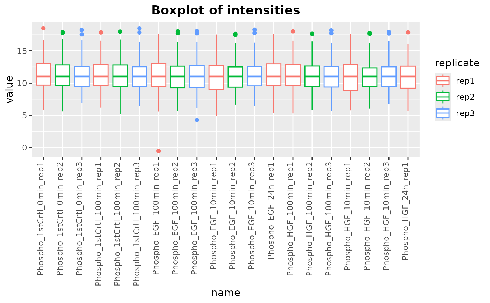

plotIntensity generates boxplots of assay intensities for each sample
in a SummarizedExperiment object. Optionally, the boxplots can be
colored based on a specified metadata column. The function handles missing
values by filtering them out before plotting.
Examples
library(SummarizedExperiment)
# Load multiAssayExperiment object
data("dia_example")
# Get SummarizedExperiment object
se <- dia_example[["Phosphoproteome"]]
colData(se) <- colData(dia_example)
# Preprocess the phosphoproteome assay
result <- preprocessPhos(seData = se, normalize = TRUE, impute = "QRILC")
#> Imputing along margin 2 (samples/columns).
# Call the plotting function
plotIntensity(result, colorByCol = "replicate")
